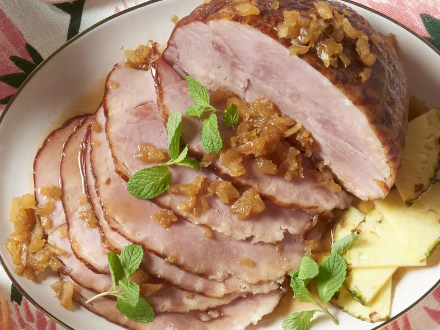

Sweet Slow Cooker Ham

Description
This ham is so easy to put together and cook in a slow cooker, and with a meat thermometer you can't go wrong! The juices can be thickened with cornstarch at the end to make a glaze.
Ingredients
- 16 ounce package light brown sugar
- 6 pound bone-in picnic ham
- 20 ounce can crushed pineapple
- 3/4 cup chai tea latte concentrate
Steps
- Spread about 3/4 of the brown sugar into the bottom of the crock of your slow cooker to cover completely. Place ham atop the brown sugar with the flat side facing down. Pour pineapple over the ham. Rub remaining brown sugar over the ham. Pour chai tea latte concentrate over the ham.
- Place cover on the slow cooker and cook on Low until an instant-read thermometer inserted into the center of the ham reads at least 160 degrees F (70 degrees C), about 5 1/2 hours. Baste ham once or twice with juices while cooking.